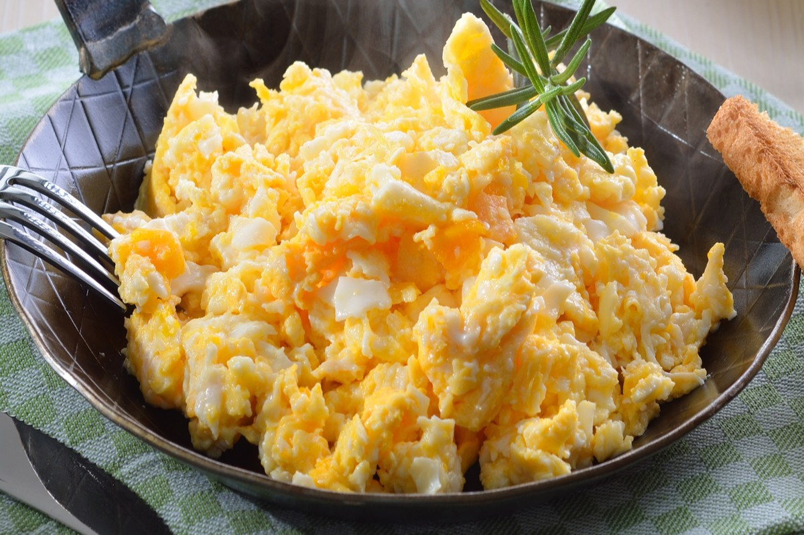

Home
Scrambled Eggs

Description
Scrambled eggs are a classic breakfast dish that is both simple and satisfying.
This recipe ensures fluffy and creamy eggs every time, perfect for a quick morning meal or a leisurely brunch.
With just a few basic ingredients, you can create a delicious and nutritious start to your day.
Ingredients
- 4 large Eggs
- 2 tablespoon Milk
- 1 tablespoon Butter
- to taste Salt
- to taste Pepper
Steps
- Crack the eggs into a bowl and add the milk. Whisk until well combined.
- Heat a non-stick pan over medium heat and add the butter.
- Once the butter has melted, pour in the egg mixture.
- Stir gently with a spatula until the eggs are just set. Season with salt and pepper to taste.
- Serve immediately.